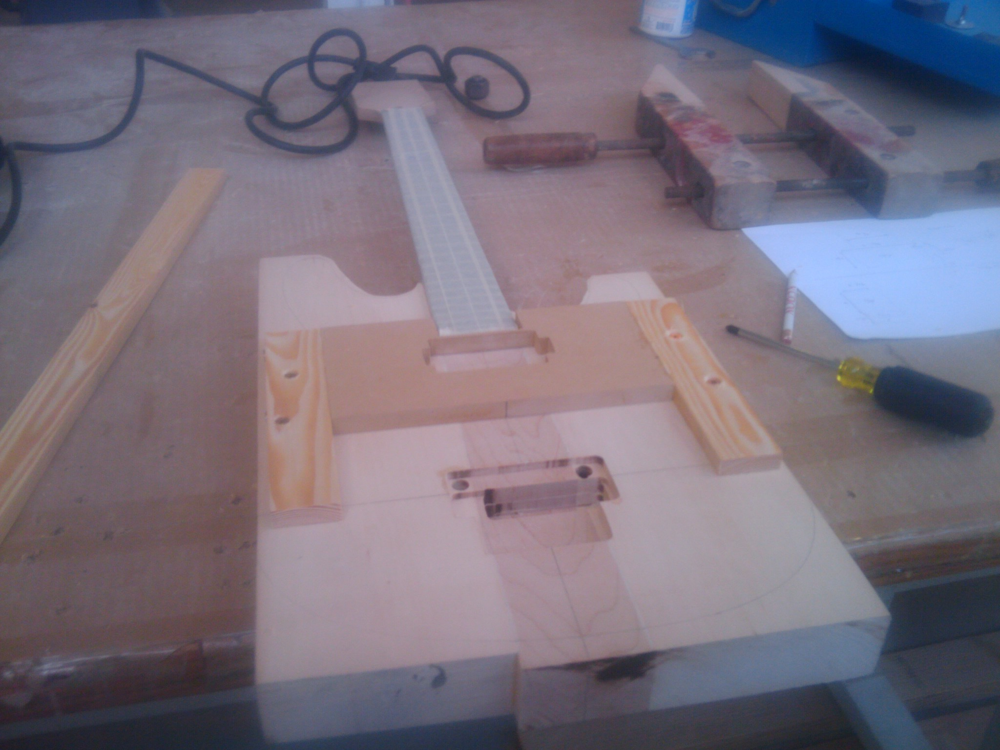
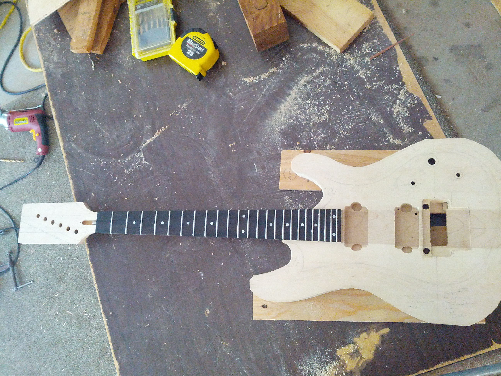
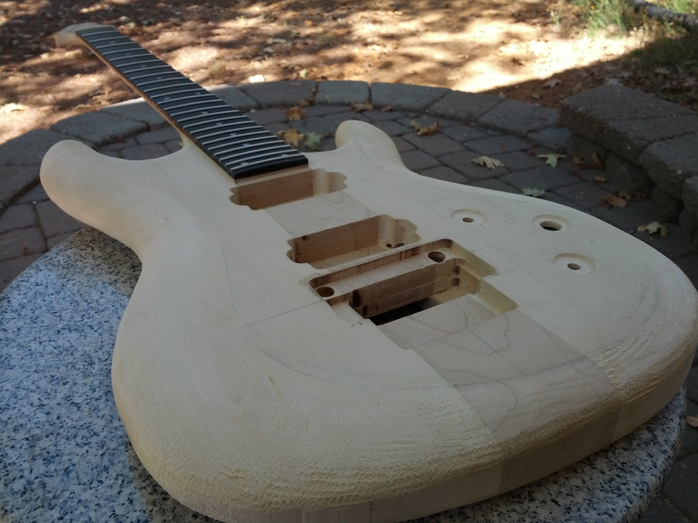
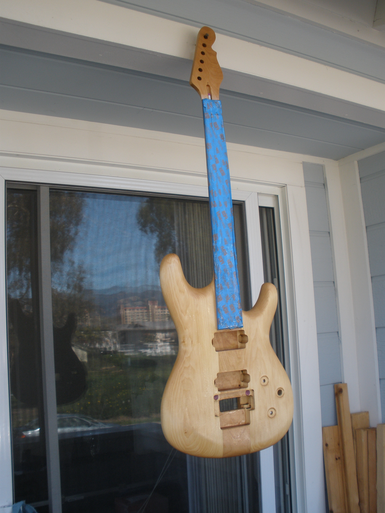
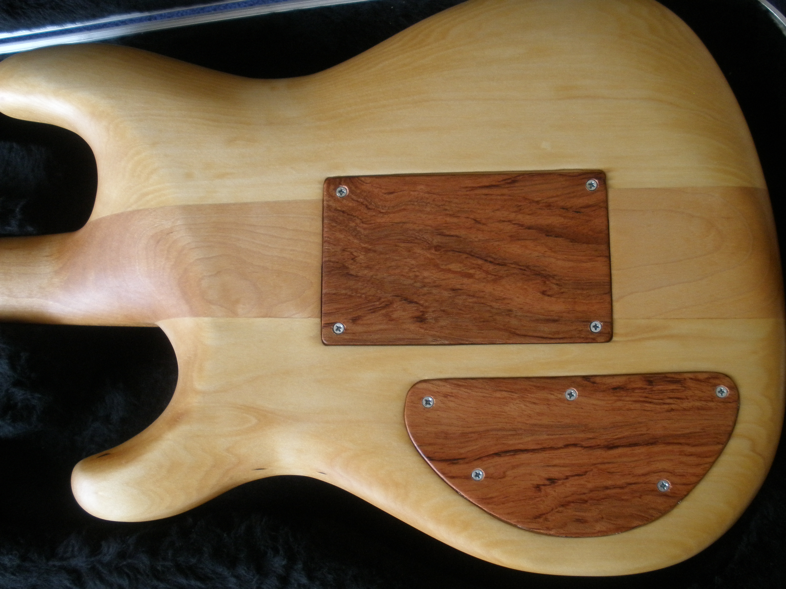
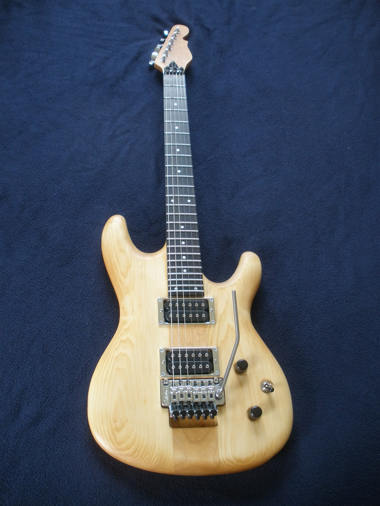

I built a guitar between high school and undergrad. I
modelled it after the
Ibanez JS Guitars (which I finally got to see in person a few years later!), but I designed it as a neck-through using a prefabricated neck (truss rod, fretboard, frets already placed for me) and elected for some non-standard wiring.
This isn’t comprehensive documentation of the process, but something like it
would have been enough to convince high-school-me that my ambition wasn’t
foolhardy (indeed, I consider the result a resounding success).

Figure 1: Mid-way through routing cavities for the pickups and Floyd Rose-style bridge: Two basswood wings from a local hardwood supplier have already been married to the maple neck with a borrowed biscuit joiner.

Figure 2: The outline of the body and has been cut using a bandsaw at the UCSB woodshop.

Figure 3: Home on break: Shaping the body with a wood rasp and files.

Figure 4: Back at school: Applying one of multiple Danish oil coats.

Figure 5: Cavities in the back are concealed by rosewood covers: Faraday shielding for the lower cavity is provided by a heavy gauge aluminum foil. The wiring is non-standard but allows me to toggle between series and parallel wiring (connecting the neck and bridge pickups), fade out the bridge pickup in either wiring, toggle a coil-tap on both humbuckers simultaneously, and control the master volume.

Figure 6: Final result after hardware installation, set-up, wiring, and tuning.
I’m not as talented a guitarist as I’d like to be, but I’ve been completely
happy with the results of this build. A little heavy, perhaps, but I have no
complaints about comfort, tone, or looks. :)